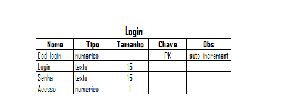
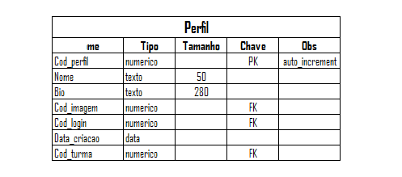
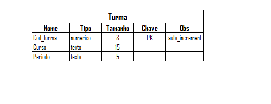
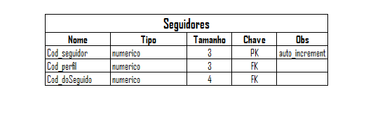
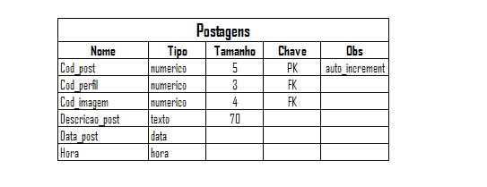
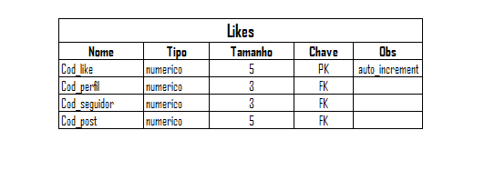
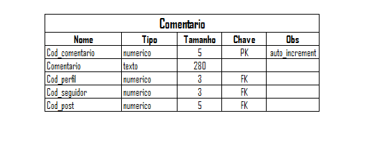
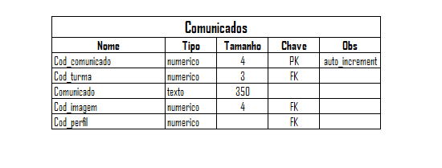
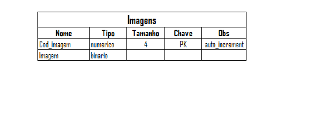
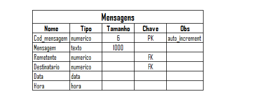

Tema
Inserção de intercomunicação entre aluno e instituição via site
Descrição
Objetivamos melhorar a comunicação da escola através de uma rede social que planejamos desenvolver. E por meio dessa, também prover um meio de interação entre os alunos mesmo fora da escola.
Integrantes
Erick Santos de Sousa
Luiz Henrique Emiliano Feitoza
Renata Rodrigues Botelho
Dicionário de dados










Banco de Dados
create database bancotcc;
create table login(
cod_login int primary key auto_increment,
login varchar(40) not null,
senha varchar(15) not null,
acesso int not null,
primeiro_acesso int not null
);
create table perfil(
cod_perfil int primary key auto_increment,
nome varchar(50) null,
apelido varchar(15),
bio varchar(280) null,
cod_imagem int null,
foreign key(cod_imagem) references imagens(cod_imagem),
data_criacao date null,
cod_turma int null,
foreign key(cod_turma) references turma(cod_turma),
cod_login int not null,
foreign key(cod_login) references login(cod_login)
);
create table seguidores(
cod_seguidor int primary key auto_increment,
cod_perfil int not null,
foreign key(cod_perfil) references perfil(cod_perfil),
cod_doSeguido int,
foreign key(cod_doSeguido) references perfil(cod_perfil)
);
create table postagens(
cod_post int primary key auto_increment,
cod_perfil int not null,
foreign key(cod_perfil) references perfil(cod_perfil),
descricao_post varchar(70) null,
data_post date not null,
hora_post time not null
);
create table likes(
cod_like int primary key auto_increment,
cod_perfil int not null,
foreign key(cod_post) references perfil(cod_perfil),
cod_seguidor int not null,
foreign key(cod_seguidor) references seguidores(cod_seguidor),
cod_post int not null,
foreign key(cod_post) references postagens(cod_post)
);
create table comentario(
cod_comentario int primary key auto_increment,
comentario varchar(280) null,
cod_perfil int not null,
foreign key(cod_perfil) references perfil(cod_perfil),
cod_seguidor int not null,
foreign key(cod_seguidor) references seguidores(cod_seguidor),
cod_post int not null,
foreign key(cod_post) references postagens(cod_post)
);
create table turma(
cod_turma int primary key auto_increment,
curso varchar(15) not null,
periodo varchar(5) not null,
cod_escola int not null,
foreign key (cod_escola) references escolas(cod_escola)
);
create table escolas(
cod_escola int primary key auto_increment,
nome_escola varchar(35) not null
);
create table comunicado(
cod_comunicado int primary key auto_increment,
cod_turma int(3) not null,
foreign key(cod_turma) references turma(cod_turma),
comunicado varchar(350) null,
cod_imagem int(4) not null,
foreign key(cod_imagem) references imagens(cod_imagem),
cod_perfil int not null,
foreign key(cod_perfil) references perfil(cod_perfil)
);
create table imagens(
cod_imagem int primary key auto_increment,
imagem blob not null,
nome_imagem varchar(50) not null,
cod_post int,
foreign key (cod_post) references postagens (cod_post)
);
create table mensagens(
cod_mensagem int primary key auto_increment,
mensagem varchar(1000) null,
remetente char(4) not null,
foreign key (remetente) references perfil(cod_perfil),
destinatario char(4) not null,
foreign key(destinatario) references perfil(cod_perfil),
data_mensagem date not null,
hora_mensagem time not null
);
create table enturmando(
cod_enturmando int not null primary key auto_increment,
cod_turma int(3) not null,
foreign key (cod_turma) references turma(cod_turma),
cod_perfil int not null,
foreign key (cod_perfil) references perfil(cod_perfil)
);
Semana 12/08 -> 19/08 -- V.1
- Logo do site
- Tela de Login
- Banco de Dados e dicionário de dados
- Tela de documentação
Semana 19/08 -> 25/08 -- V.2
Banco de Dados
- Adicionado o campo data_criacao na tabela perfil
- Adicionado o campo cod_turma na tabela perfil
- Campo foto da tabela perfil modificado para cod_imagem
- Deletado o campo posts da tabela perfil
- Campo imagem_post da tabela postagens modificado para cod_imagem
- Criado a tabela turma
- Criado a tabela comunicados
- Criado a tabela imagens
Correções
- Correção do campo coemtario da tabela comentario para comentario
Semana 25/08 -> 08/09 -- V.3
Navegabilidade
- Inserida uma nova interface que antecede a tela de login
- A tela de login ganhou um novo layout
- Inserção de dois novos layouts no modelo de navegabilidade, adaptados a formatação de desktop
- Criação do 'primeiro_acesso.html', uma tela de cadastro para os usuários que estão fazendo seu primeiro acesso e que ainda não possuem suas informações cadastradas
- Criação do 'perfil.html', onde a tela de perfil começou a ser projetada
Back-end
- Criação do 'conexao.php', código responsável pela conexão com o banco de dados
- Criação do 'valida_login.php', código responsável por verificar se o usuário está cadastrado
- Criação do 'verifica.php' código responsável por verificar se o usuário está fazendo seu primeiro acesso ou não
- Criação do 'dados_perfil.php' código respondável por puxar todos os dados do usuário para exibí-los no perfil
Banco de Dados
- Criada a tabela mensagens
- Todos os campos da tabela perfil, com a excessão do campo cod_login, foram alterado de not null para null
- Inserido o campo cod_doSeguido na tabela seguidores
- Inserido o campo acesso na tabela login
Semana 09/09 -> 24/09 -- V.4
Banco de Dados
- Alteramos o campo login da tabela login de varchar(15) para varchar (40)
- Adicionamos o campo apelido na tabela perfil
- Foi criada a tabela enturmando, para fazer a relação de cada perfil à sua turma
Front-end
- Criação da interface 'feed.html'
- Criação de uma interface para usuários administradores, o 'administrativa.html', mas ainda não foi finalizada
- Criação de uma interface de consulta, o 'consulta.html', onde o usuário administrador poderá verificar e fazer alterações nos perfis se necessário
Back-end
- Criação do 'cad.php', código responsável por cadastrar os dados inseridos na tela 'primeiro_acesso.html' no banco de dados
- Criação do 'up_bio.php', código responsável por permitir que o usuário altere sua bio
- Criação do 'deslogar.php', código responsável por permitir que o usuário saia de sua conta
- Criação do 'posts_perfil.php', código responsável por trazer do banco de dados todos os post que um usuário postou para exibí-lo em seu perfil
- Foi iniciado a criação dos cruds de atualização e exclusão das contas, que serão finalizados na próxima versão
Correção
- 'perfil.html' alterado para 'perfil.php';
- Criamos a pasta scrips para armazenar para armazenar os codigos javascript
- Foi criado o 'login.js' para adicionar javascript no 'login.html'
Semana 25/09 -> XX/XX -- V.5
Banco de Dados
- Criação da tabela escolas
- Exclusão do campo cod_imagem na tabela postagens
- Inserção do campo cod_post na tabela imagem
- Inserção do campo primeiro_acesso na tabela login
- Campo imagem da tabela imagens alterado para tipo blob not null
- Inserção do campo nome_imagem na tabela imagens
- Inserção do campo cod_escola na tabela turmas
Front-end
- Criação de interface para os administradores poderem criar novos perfis
Back-end
- Criação do 'option_escola.php', código responsável por listar as escolas cadastradas na rede social
- Criação do 'feed.php', código responsável por carregar no feed as postagens das pessoas que o usuário segue
- Criação do 'noovo_perfil.php', código responsável por inserir novos usuários no banco de dados
- Criação do 'toPost.php', código responsável por fazer novas postagens na rede social (NÃO FINALIZADO)
Correção
- O nome da tela de documentação foi alterado de 'designtcc.html' para 'documentacao.html'
- O nome do código 'cad.php' foi alterado para 'primeiro_acesso.php'
- Algumas correções foram feitas nos códigos 'valida_login.php', 'verifica.php', 'primeiro_acesso.php' devido a algumas alterações do BD